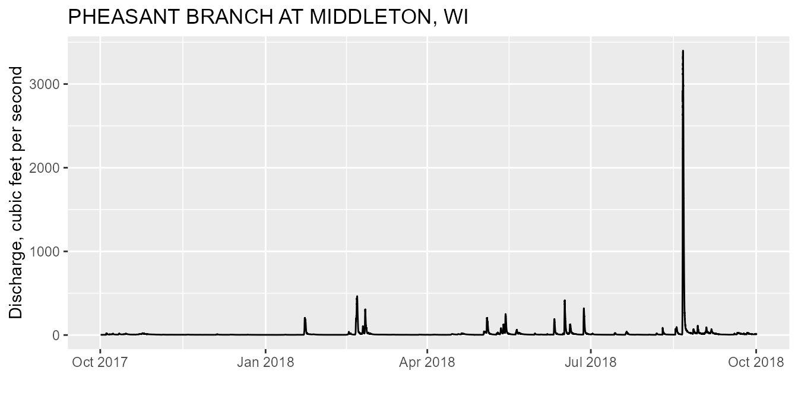

R is an open-source programming language. It is known for extensive statistical capabilities, and also has powerful graphical capabilities. Another benefit of R is the large and generally helpful user-community. This includes R-package developers who create packages that can be easily installed to enhance the basic R capabilities. This article will describe the R-package “dataRetrieval” which simplifies the process of finding and retrieving water from the U.S. Geological Survey and other agencies.
It is increasingly common for large-scale dataRetrieval
requests. Geographically-large requests can be done by looping through
either state codes (stateCd$STATE) or HUCs. BUT without
careful planning, those requests could be too large to complete. This
article will describe some tips to make those queries manageable.
Package Overview
dataRetrieval is available on Comprehensive R Archive
Network (CRAN).
install.packages("dataRetrieval")Once the dataRetrieval package has been installed, it
needs to be loaded in order to use any of the functions:
There are several vignettes included within the
dataRetrieval package. The following command will open the
main package introduction:
vignette("dataRetrieval", package = "dataRetrieval")Additionally, each function has a help file. These can be accessed by typing a question mark, followed by the function name in the R console:
?readNWISuvEach function’s help file has working examples to demonstrate the usage. The examples may have comments “## Not run”. These examples CAN be run, they just are not run by the CRAN maintainers due to the external service calls.
Finally, if there are still questions that the vignette and help
files don’t answer, please post an issue on the
dataRetrieval GitHub page:
National Water Information System (NWIS)
USGS data comes from the National Water Information System (NWIS). There are many types of data served from NWIS. To understand how the services are separated, it’s helpful to understand the terms here:
| Type | Description | service |
|---|---|---|
| Unit | Regular frequency data reported from a sensor (e.g. 15 minute interval). This data can include ‘real-time’ data | uv |
| Daily | Data aggregated to a daily statistic such as mean, min, or max. | dv |
| Discrete | Data collected at non-regular times. | water quality (qw), groundwater (gwlevel), rating curves (rating), peak flow (peak), surfacewater (meas) |
USGS Basic Retrievals
The USGS uses various codes for basic retrievals. These codes can have leading zeros, therefore in R they need to be a character (“01234567”).
- Site ID (often 8 or 15-digits)
- Parameter Code (5 digits)
- Full list:
- https://nwis.waterdata.usgs.gov/usa/nwis/pmcodes
- Alternatively use
readNWISpCode("all")
- Statistic Code (for daily values)
Here are some examples of a few codes:
| Parameter Codes | Short Name |
|---|---|
| 00060 | Discharge |
| 00065 | Gage Height |
| 00010 | Temperature |
| 00400 | pH |
| Statistic Codes | Short Name |
|---|---|
| 00001 | Maximum |
| 00002 | Minimum |
| 00003 | Mean |
| 00008 | Median |
Use the readNWISpCode function to get information on
USGS parameter codes. You can use “all” to get a full list. Then use
your favorite data analysis methods to pull out what you need. Here is
one example to find all the phosphorous parameter codes:
pcode <- readNWISpCode("all")
phosCds <- pcode[grep("phosphorus",
pcode$parameter_nm,
ignore.case = TRUE
), ]
names(phosCds)## [1] "parameter_cd" "parameter_group_nm" "parameter_nm"
## [4] "casrn" "srsname" "parameter_units"
unique(phosCds$parameter_units)## [1] "ug/l as P" "mg/l as P" "mg/kg as P" "ug/l" "mg/kg"
## [6] "%" "mg/l" "mg/l PO4" "kg/d as P" "lb/day"
## [11] "mg/kg PO4" "mg/m2 as P" "lb/d as P" "ug/L as P" "tons/day"
## [16] "ml" "nu" "g"Explore the wide variety of parameters that contain “phosphorus” in the parameter_nm:
User-friendly retrievals: NWIS
Sometimes, you know exactly what you want. If you know:
- The type of data (groundwater, unit, water quality, daily, etc..)
- USGS site number(s)
- USGS parameter code(s)
- Time frame (start and end date)
You can use the “user-friendly” functions. These functions take the same 4 inputs (sites, parameter codes, start date, end date), and deliver data from different NWIS services:
| Function Name | Data |
|---|---|
| readNWISuv | Unit |
| readNWISdv | Daily |
| readNWISgwl | Groundwater Level |
| readNWISmeas | Surface-water |
| readNWISpeak | Peak Flow |
| readNWISqw | Water Quality |
| readNWISrating | Rating Curves |
| readNWISuse | Water Use |
| readNWISstat | Statistics |
Let’s start by asking for discharge (parameter code = 00060) at a site right next to the USGS office in Wisconsin (Pheasant Branch Creek).
siteNo <- "05427948"
pCode <- "00060"
start.date <- "2017-10-01"
end.date <- "2018-09-30"
pheasant <- readNWISuv(
siteNumbers = siteNo,
parameterCd = pCode,
startDate = start.date,
endDate = end.date
)From the Pheasant Creek example, let’s look at the data. The column names are:
names(pheasant)## [1] "agency_cd" "site_no" "dateTime" "X_00060_00000"
## [5] "X_00060_00000_cd" "tz_cd"The names of the columns are based on the parameter and statistic
codes. In many cases, you can clean up the names with the convenience
function renameNWISColumns:
pheasant <- renameNWISColumns(pheasant)
names(pheasant)## [1] "agency_cd" "site_no" "dateTime" "Flow_Inst" "Flow_Inst_cd"
## [6] "tz_cd"The returned data also has several attributes attached to the data frame. To see what the attributes are:
names(attributes(pheasant))## [1] "names" "row.names" "class" "url"
## [5] "siteInfo" "variableInfo" "disclaimer" "statisticInfo"
## [9] "queryTime"Each dataRetrieval return should have the attributes:
url, siteInfo, and variableInfo. Additional attributes are available
depending on the data.
To access the attributes:
url <- attr(pheasant, "url")
url## [1] "https://nwis.waterservices.usgs.gov/nwis/iv/?site=05427948&format=waterml,1.1&ParameterCd=00060&startDT=2017-10-01&endDT=2018-09-30"Make a simple plot to see the data:
Then use the attributes attached to the data frame to create better labels:
parameterInfo <- attr(pheasant, "variableInfo")
siteInfo <- attr(pheasant, "siteInfo")
ts <- ts +
xlab("") +
ylab(parameterInfo$variableDescription) +
ggtitle(siteInfo$station_nm)
ts
Discover Data: NWIS
This is all great when you know your site numbers. What do you do when you don’t?
There are 2 dataRetrieval functions that help:
-
whatNWISsitesfinds sites within a specified filter (quicker) -
whatNWISdatasummarizes the data within the specified filter (more information)
There are several ways to specify the requests. The best way to discover how flexible the USGS web services are is to click on the links and see all of the filtering options: http://waterservices.usgs.gov/
Available geographic filters are individual site(s), a single state,
a bounding box, or a HUC (hydrologic unit code). See examples for those
services by looking at the help page for the readNWISdata
function:
Here are a few examples:
Arizona Example
For example, let’s see which sites ever measured phosphorus in Arizona:
AZ_sites <- whatNWISsites(
stateCd = "AZ",
parameterCd = "00665"
)
nrow(AZ_sites)## [1] 586
names(AZ_sites)## [1] "agency_cd" "site_no" "station_nm" "site_tp_cd" "dec_lat_va"
## [6] "dec_long_va" "colocated" "queryTime"Now let’s see what we get back from the whatNWISdata
function:
## [1] "agency_cd" "site_no" "station_nm"
## [4] "site_tp_cd" "dec_lat_va" "dec_long_va"
## [7] "coord_acy_cd" "dec_coord_datum_cd" "alt_va"
## [10] "alt_acy_va" "alt_datum_cd" "huc_cd"
## [13] "data_type_cd" "parm_cd" "stat_cd"
## [16] "ts_id" "loc_web_ds" "medium_grp_cd"
## [19] "parm_grp_cd" "srs_id" "access_cd"
## [22] "begin_date" "end_date" "count_nu"
AZ_data <- whatNWISdata(
stateCd = "AZ",
parameterCd = "00665"
)
names(AZ_data)We get many more columns returned. For discovering useful data, the last 3 columns of this return are especially helpful. “begin_date”, “end_date”, and “count_nu” give a good indication of how much data of a particular “parm_cd”/“stat_cd”/“data_type_cd” was collected.
Additional NWIS discovery tools
Our team is actively working on making our data more discoverable. For now, we encourage you to use interactive mappers such as:
The NWIS Mapper: http://maps.waterdata.usgs.gov/mapper/index.html
The National Water Dashboard: https://dashboard.waterdata.usgs.gov/app/nwd
Wisconsin Example
Let’s do one more example, we’ll look for long-term USGS phosphorous
data in Wisconsin. This time, we will take the information from the
whatNWISdata function, filter down the sites to exactly our
interest, and then get the data. Let’s say we want data from sites that
have been collecting data for at least 15 years and have at least 300
measurements:
pCode <- c("00665")
phWI <- whatNWISdata(
stateCd = "WI",
parameterCd = pCode
)
library(dplyr)
phWI.1 <- phWI %>%
filter(count_nu > 300) %>%
mutate(period = as.Date(end_date) - as.Date(begin_date)) %>%
filter(period > 15 * 365)Let’s look at the maximum measured value, and number of samples:
phos_summary <- phos_WI_data %>%
group_by(site_no) %>%
summarize(
max = max(result_va, na.rm = TRUE),
count = n()
) %>%
ungroup() %>%
left_join(attr(phos_WI_data, "siteInfo"),
by = "site_no"
)Then map it:
Multi-Agency Water Quality Data from the Water Quality Portal (WQP)
dataRetrieval also allows users to access data from the
Water Quality Portal. The
WQP houses data from multiple agencies; while USGS data comes from the
NWIS database, EPA data comes from the STORET database (this includes
many state, tribal, NGO, and academic groups). The WQP brings data from
all these organizations together and provides it in a single format that
has a more verbose output than NWIS. To get non-NWIS data, need to use
CharacteristicName instead of parameter code.
WQP Basic Retrievals
Much like the convenience functions for NWIS, there’s a simple function for retrievals if the site number and parameter code or characteristic name is known.
nwisQW <- readNWISqw(phWI.1$site_no[1],
parameterCd = "00665"
)
ncol(nwisQW)## [1] 36
nrow(nwisQW)## [1] 362Data Discovery: WQP
The value of the Water Quality Portal is to explore water quality data from different sources.
The following function returns sites that have collected phosphorus data in Wisconsin. There’s no way to know if that site has collected one sample, or thousands. This function is pretty fast, but only reports which sites have data.
phosSites <- whatWQPsites(
statecode = "WI",
characteristicName = "Phosphorus"
)Similar to NWIS, to find out the scope of the available data, there
is a whatWQPdata function:
phos_data_available <- whatWQPdata(
statecode = "WI",
characteristicName = "Phosphorus"
)This function comes back with a few really useful columns such as “activityCount” and “resultCount”. As with our NWIS query, let’s filter down our data request to sites that have only had more than 300 measurements.
phos_data_sites_to_get <- phos_data_available %>%
filter(resultCount >= 300)
phosData <- readWQPdata(
siteNumbers = phos_data_sites_to_get$MonitoringLocationIdentifier,
characteristicName = "Phosphorus"
)With data coming from many different agencies, it will be important to carefully review the returned data. For instance, this “Phosphorus” data comes back with many different units. It will be important to make smart decisions on how and if the queried data can be used together.
unique(phosData$ResultMeasure.MeasureUnitCode)Let’s look at the maximum measured value, and number of samples:
siteInfo <- attr(phosData, "siteInfo")
wiSummary <- phosData %>%
filter(ResultMeasure.MeasureUnitCode %in%
c("mg/l", "mg/l as P")) %>%
group_by(MonitoringLocationIdentifier) %>%
summarise(
count = n(),
max = max(ResultMeasureValue, na.rm = TRUE)
) %>%
left_join(siteInfo, by = "MonitoringLocationIdentifier")Time/Time zone discussion
The arguments for all
dataRetrievalfunctions concerning dates (startDate, endDate) can be R Date objects, or character strings, as long as the string is in the form “YYYY-MM-DD”.-
For functions that include a date and time,
dataRetrievalwill take that information and create a column that is a POSIXct type. By default, this date/time POSIXct column is converted to “UTC”. In R, one vector (or column in a data frame) can only have ONE timezone attribute.- Sometimes in a single state, some sites will acknowledge daylight savings and some don’t
-
dataRetrievalqueries could easily span multiple timezones (or switching between daylight savings and regular time)
The user can specify a single timezone to override UTC. The allowable tz arguments are
OlsonNames(see also the help file forreadNWISuv).readNWISqwmay create both a “startDateTime” and “endDateTime” if the data is appropriate. Both columns will have the timezone attribute from the user-defined “tz_cd” column. The originally reported timezones are retained in the “sample_start_time_datum_cd_reported” and “sample_end_time_datum_cd_reported” columns.
Large Data Requests
It is increasingly common for R users to be interested in large-scale
dataRetrieval analysis. You can use a loop of either state
codes (stateCd$STATE) or HUCs to make large requests. BUT
without careful planning, those requests could be too large to complete.
Here are a few tips to make those queries manageable:
Please do NOT use multi-thread processes and simultaneously request hundreds or thousands of queries.
Take advantage of the
whatWQPdataandwhatNWISdatafunctions to filter out sites you don’t need before requesting the data. Use what you can from these faster requests to filter the full data request as much as possible.Think about using
tryCatch, saving the data after each iteration of the loop, and/or using a make-like data pipeline (for example, see thedrakepackage). This way if a single query fails, you do not need to start over.The WQP doesn’t always perform that well when there are a lot of filtering arguments in the request. Even though those filters would reduce the amount of data needed to transfer, that sometimes causes the pre-processing of the request to take so long that it times-out before returning any data. It’s a bit counterintuitive, but if you are having trouble getting your large requests to complete, remove arguments such as Sample Media, Site Type, these are things that can be filtered in a post-processing script. Another example: sometimes it is slower and error-prone requesting data year-by-year instead of requesting the entire period of record.
Pick a single state/HUC/bbox to practice your data retrievals before looping through larger sets, and optimize ahead of time as much as possible.
But wait, there’s more!
There are two services that also have functions in
dataRetrieval, the National Groundwater Monitoring Network
(NGWMN) and Network Linked Data Index (NLDI). These functions are not as
mature as the WQP and NWIS functions. A future blog post will bring
together these functions.
National Groundwater Monitoring Network (NGWMN)
Similar to WQP, the NGWMN brings groundwater data from multiple
sources into a single location. There are currently a few
dataRetrieval functions included:
Network Linked Data Index (NLDI)
The NLDI provides a information backbone to navigate the NHDPlusV2 network and discover features indexed to the network. For an overview of the NLDI, see: https://rconnect.usgs.gov/dataRetrieval/articles/nldi.html
There is currently one function in dataRetrieval for NLDI: